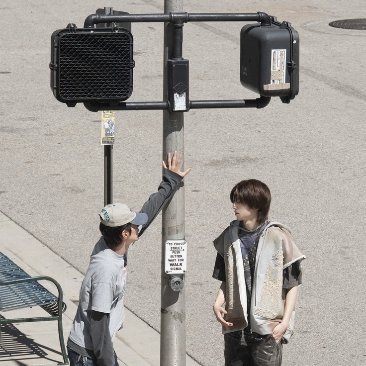

A place for unfinished thoughts and quiet progress.
as i am.

awokaok moment.
sokin warkop.
ON REPEAT
"This is a music video i made with my friends, go check it out guys!:D"
JOURNAL
honestly, being 01% done is better than 00%. today was a mix of "we're so back" and "it's over," but i'm choosing to romanticize the struggle. currently learning that i don't have to have everything figured out right now. just vibes, good music, and making sure my pixels look right. we move.